Практичні курси · журнал «ДентАрт» 2022 №1
Консервативна корекція естетики після ортодонтії
Conservative correction of aesthetics after orthodontics
Клінічний випадок крок за кроком демонструє відновлення естетики після ортодонтичного лікування найбільш консервативним способом усунення недоліків форми передніх зубів.
Ключем до успішного моделювання форми передніх зубів є вибір матеріалу з потрібною опаковістю, а також правильний вибір матеріалу для імітації шару емалі і товщини його перекриття.
У цьому клінічному випадку 22-річну дівчину направив до нас ортодонт після закінчення лікування з вирівнювання зубного ряду. Клінічно можна відзначити очевидну різницю у формі латеральних різців. Ми також можемо побачити результат попереднього лікування правого та лівого верхніх латеральних різців. При огляді в оклюзійне дзеркало можна детальніше визначити форму недоліків і виявити елементи, які потрібно змінити.
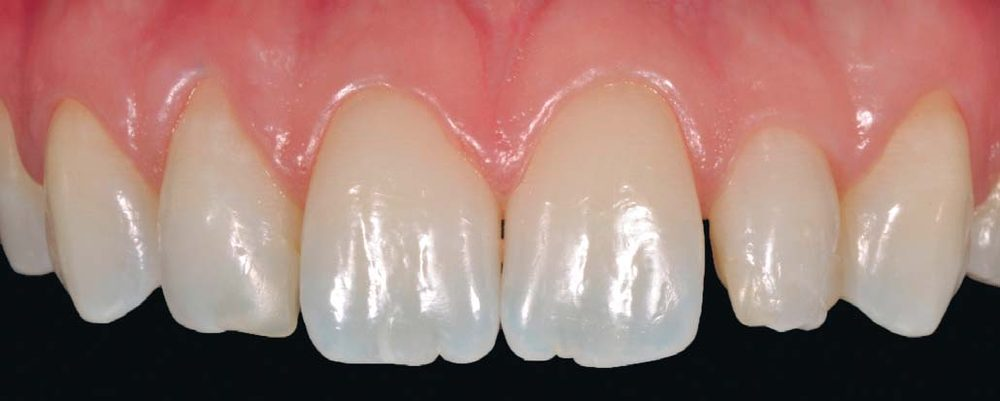
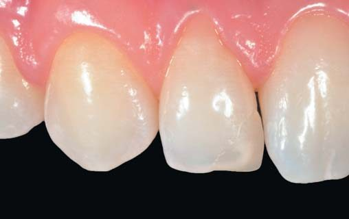
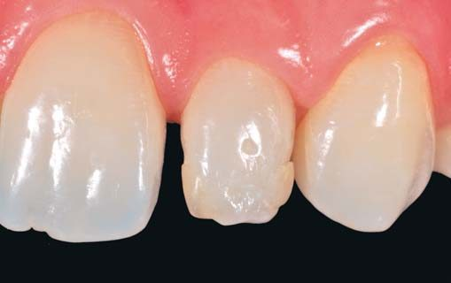
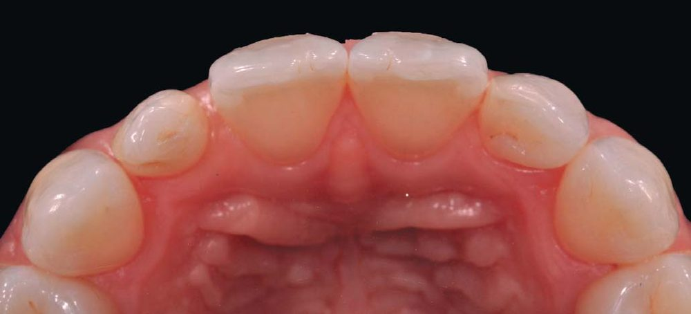
Дуже важливо збільшити дистальну частину зуба 21, інакше зуб 22 матиме вигляд ширшого, ніж центральний різець, і остаточний естетичний результат буде неприйнятним. Воскове моделювання підтверджує наші припущення, що з'явилися під час первинного огляду пацієнтки, і допомагає обрати правильні відтінки матеріалу. Вибір керамічних вінірів змушував би нас повністю перекрити дуже тонким шаром щонайменше три зуби. Враховуючи великий ризик естетичної невдачі, краще користуватися підібраним композитом, ніж керамікою.
Перед реставрацією зроблено ретракцію ясен за допомогою нитки. Колір визначається до накладання рабердаму, це дозволяє краще ізолювати зуб навіть за використання рабердаму. Після цього перевіряємо прилягання шаблону до зубів, які збираємося реставрувати. Важливим моментом є пасивне застосування силіконового шаблону. Надлишки силікону на контактних поверхнях та в зонах навколо сосочків можуть бути видалені скальпелем.
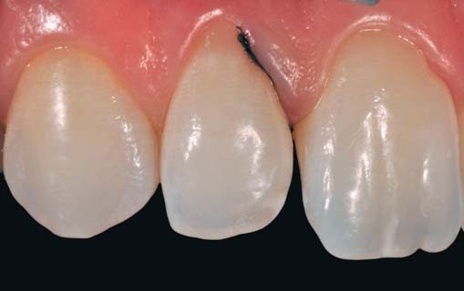
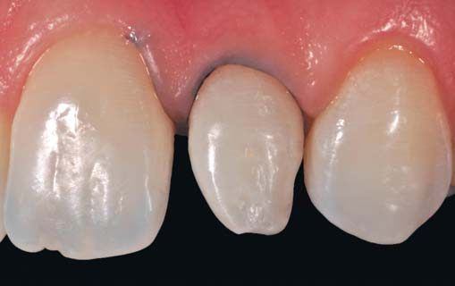
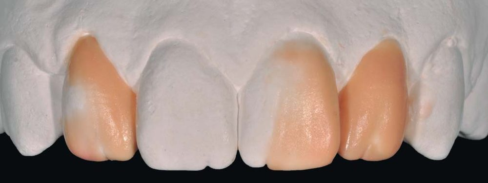
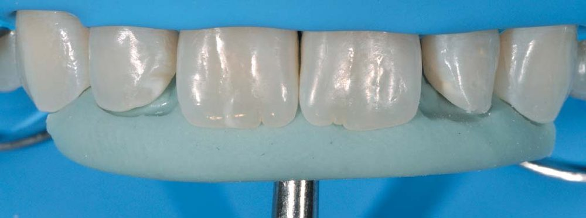
Завдяки встановленому шаблону можна чітко визначити різницю між поточною ситуацією і восковою моделлю. Ми з легкістю можемо визначити потрібну кількість композиту та місце, куди його слід додати. Адгезивна процедура дуже проста: після ретельного полірування поверхні зубів вибірково протравлюються, і після адгезивної підготовки ми беремося до пошарового накладання композиту. Після поміщення невеликої кількості матеріалу в силіконовий шаблон встановлюємо проксимальні матриці і створюємо контактні стінки. Ця процедура дозволяє спростити дизайн порожнини та накладання шару опакового дентину.
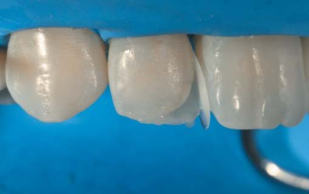
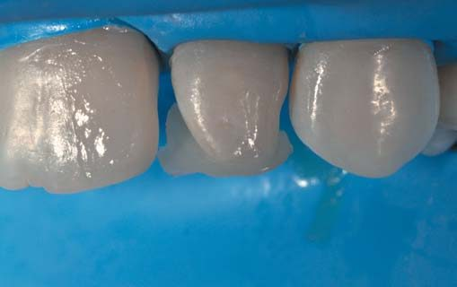
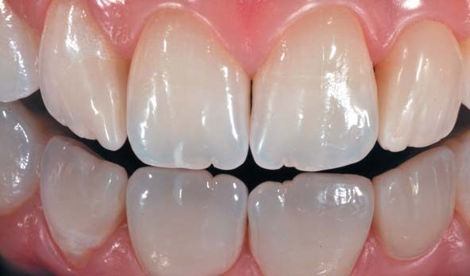
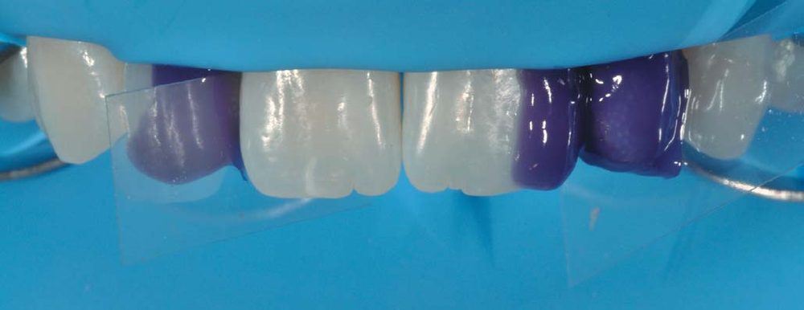
Успішний остаточний естетичний результат буде зумовлений ідеальною формою та правильною прозорістю останнього шару емалі. Це точне поєднання має вирішальне значення для консервативного підходу, при якому не перекривається вся емаль зуба. Фінальні та віддалені знімки підтверджують гарну інтеграцію і правильність нашого відновлення естетики передніх зубів пацієнтки. При правильному використанні композит – винятковий матеріал для таких ультраконсервативних реставрацій.
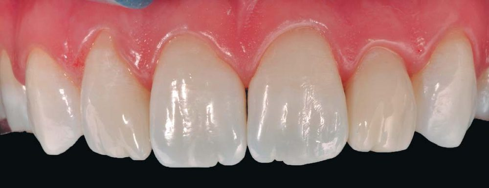
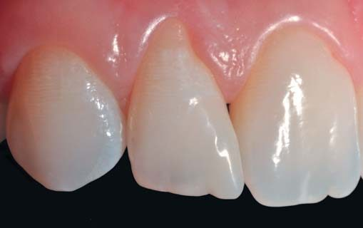
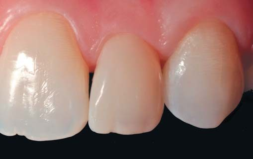
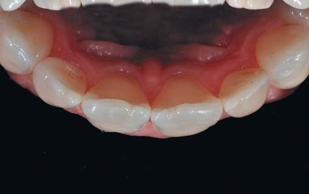
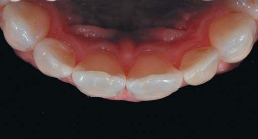
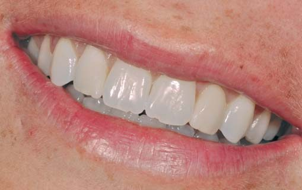
Клінічний випадок надав науковий клуб «Style Italiano».
Література
- Santoro M. et al. Mesiodistal crown dimensions and tooth size discrepancy of the permanent dentition of Dominican Americans. Angle Orthod. 2000;70:303–307.
- Othman S. A., Harradine N. W. T. Tooth-size discrepancy and Bolton's ratios: a literature review. Journal of Orthodontics. 2006;33:45–51.
- Wedrychowska-Szulc B. et al. Overall and anterior Bolton ratio in Class I, II and III orthodontic patients. Eur J Orthod. 2010 Jun;32(3):313–8.
- Al-Khateeb S. N., Abu Alhaija E. S. Tooth size discrepancies and arch parameters among different malocclusions in a Jordanian sample. Angle Orthod. 2006 May;76(3):459–65.
- Counihan D. The orthodontic restorative management of the peg-lateral. Dent Update. 2000 Jun;27(5):250–6.
- Devoto W., Saracinelli M., Manauta J. Composite in everyday practice: how to choose the right material and simplify application techniques in the anterior teeth. Eur J Esthet Dent. 2010 Spring;5(1):102–24.
- Dietschi D. Free-hand bonding in the esthetic treatment of anterior teeth: creating the illusion. J Esthet Dent. 1997;9:156–164.
- Magne P., Douglas W. H. Rationalization of esthetic restorative dentistry based on biomimetics. J Esthet Dent. 1999;11:5–15.
- Dietschi D. Layering concepts in anterior composite restorations. J Adhes Dent. 2001;3:71–80.
- Fahl N. Jr. A polychromatic composite layering approach for solving a complex Class IV/direct veneer-diastema combination: part I. Pract Proced Aesthet Dent. 2006;18:641–645.
- Fahl N. Jr. A polychromatic composite layering approach for solving a complex Class IV/direct veneer/diastema combination: part II. Pract Proced Aesthet Dent. 2007;19:17–22.